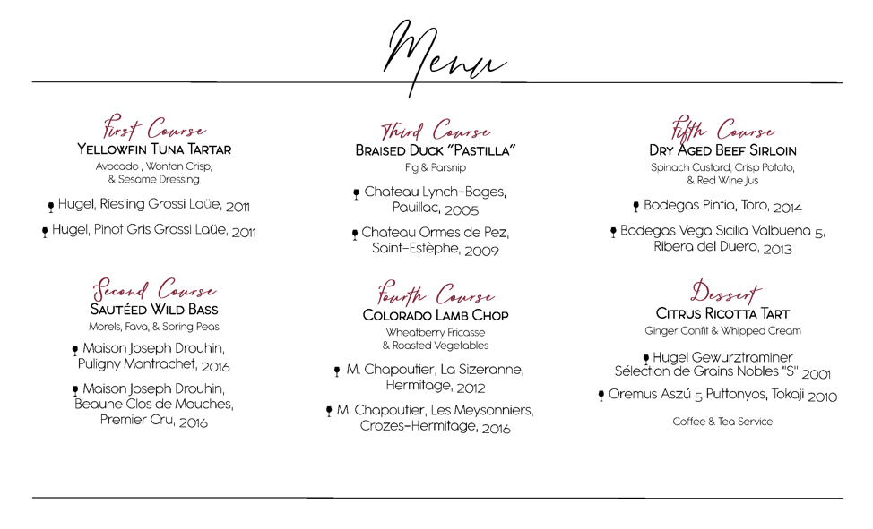

The Grapevine
Summer 2019

From the Host: Cheers to Summer
Greetings and I wish everyone a happy, healthy, safe, and enjoyable summer. The weather is finally getting nice here in Central Pennsylvania and my wine mood is changing with the season.
As the members are dining poolside, on the patios and terrace, their wines of choice are either crisp roses and fun whites to complement the lighter fare and beautiful weather. I raise a glass and toast you all!
The Society has some great things planned for the CMAA World Conference in Grapevine, TX, next year! Colin and Karl are setting up the wine dinner, Ryan and Blaine are working on the Pre-Conference Workshop, Blaine will be in charge of the auctions again, Jack is executing the business meeting, and Sarah and Kelvin are organizing the membership reception. Thank you to all that took the time to fill out the survey from this year’s wine dinner. The information and feedback you provide is very instrumental in future planning.
We are planning more Regional Education Workshops and would appreciate your assistance. Please feel free to reach out to Ryan or myself if you have any great programs that your club or chapter has been successful with or if you know a vendor with a great product. The same applies to any webinar suggestions or ideas.
Colin and I will continue to work with the CMAA National HQ team on the Society’s Strategic Plan. We will focus on our mission and vision statements and our brand and then involve the entire Board to achieve our goals and objectives. We will then reach out to all of you as we focus on certain tasks and timelines.
I look forward to great year with the Society and all that is going on. Please feel free to reach out to me at any time with ideas, questions, or feedback.
Cheers,Paul A. Smith III
Host
Chapter & Member News
Sold Out! Third Annual IWS Northeast Regional Wine Dinner
Karl Habib, CCM, Kitchenmaster
For the third consecutive year, the IWS Northeast Regional Wine Dinner was a sell-out. This year, 138 club managers and distinguished guests broke bread and raised glasses at the prestigious Harmonie Club in New York City on April 4 at a dinner that featured Iconic Old World Wineries.
Nine CMAA Chapters were represented! IWS members were in attendance from the New Jersey, Connecticut, Metropolitan, Philadelphia & Vicinity, City of New York, New England, Greater Baltimore, Lone Star, and Golden State Chapters. Special thanks to the Lone Star Chapter’s Marvin Jones, CCM, and Bill Johnson, CCM, CCE, who represented the Golden State Chapter once again!
The evening began with a reception featuring butler-passed hors d’oeuvres and a selection of wines including Ruinart Blanc de Blanc, presented by Nicole Burke, Moet Hennessy USA; Pascal Jolivet Pouilly Fume, Terres Blanches 2014, presented by Anthony Cohen, Frederick Wildman & Sons; M. Chapoutier, Chante-Alouette 2016; and Oremus, Tokau-Mandolas 2017.
The reception was followed by an amazing six-course dinner with each course paired with two wines.

Wine Society Board Members and Past Hosts featured with the evening’s Winery Owners and Representatives. From Left, Back Row: Ryan Brennan, CCM, Burton Ward, CCM, CCE, Kinou Cazes Hachemian, Jeffrey G. Martocci, CCM, Sarah Kuhl, CCM, CS, Aurore Drouhin, Colin Mack-Allen, CCM, CCE. Front Row: Antonio Menendez Puente, Karl Habib, CCM, Maxime Chapoutier, Jean Frederic Hugel, Tom Czaus, CCM, CHE.
The following winery owners and representatives presented their wines:
Jean Frederic Hugel– Owner, Hugel-Fils, - Jean Frederic is part of the 13th generation of the Hugel family. He oversees the viticulture and oenology under the watchful eye of his uncle, Marc. The Hugels are confident that Alsatian wines will soon return to prominence as highly valued wines.
Laurent Drouhin, represented by his daughter, Aurore – Export Director - North America & Caribbean, Maison Joseph Drouhin – Laurent followed his father to the vineyards at a young age and likes to say that he grew up in a barrel! He has lived in the New York area since 2005 with his wife, Beatrice, and their two children.
Kinou Cazes Hachemian – Co-Owner, Chateau Lynch Bages & Chateau Ormes de Pez – Kinou is responsible for representing Lynch-Bages and the wines from the family estates throughout North America. She lives outside New York City with her husband and children.
Antonio Menendez Puente – General Manager of Sales & Marketing, Vega-Sicilia – Antonio joined Vega-Sicilia in 2015 to lead the business development of the group both nationally and internationally, to manage corporate sales and marketing, and to create the overall long-term strategy for the company.
Maxime Chapoutier – Owner, M. Chapoutier – Maxime’s father, Michel Chapoutier, became the winemaker of M. Chapoutier in 1988, his family’s wine estate that has been in production for 200 years. Maxime is the head distiller and specializes in vineyard prospection, valuation, and transaction in exploring new terroir.
During the event, a live auction was held with two lots presented by Auctioneer, Tom Czaus, CCM, CHE. More than $5,300 was raised, which will be set aside to help fund future NE Regional Wine Dinners.
A very special thank you to Davina Weinstein, CCM, General Manager and the team (noted below) at the Harmonie Club for hosting this event in spectacular fashion.
Thomas Piede, Executive Chef
Christopher McAllister, Assistant Clubhouse Manager
Quint Spitzer, Member Services Manager
Jose Sotelo, Banquet Manager
James Guzinski, Dining Manager
And thank you to my good friend, Ryan Brennan, CCM, Chairman of the NJCMA Wine Society, who had the vision to create this event and has now started a tradition that will hopefully continue for years to come!
Sonoma County CMI Wine Workshop
Monica Dawson, Director of Catering & Special Events, Birnam Wood Golf Club, Santa Barbara, CA
On Sunday, April 14, just as Tiger Woods made his final putt to win The Masters, members of the Golden State Chapter of CMAA assembled in the lobby of the Hyatt Regency Sonoma Wine Country. A spacious shuttle bus and friendly driver Dave arrived to whisk us away to our first location, Iron Horse Vineyards in Sebastopol. We were greeted at Iron Horse by Joy Sterling, who dressed just as joyful as her attitude and namesake; and were handed a glass of "Joy!" sparkling wine. From David Munksgard, long time Iron Horse Winemaker, we learned about rain affecting frost in grapes and how to prevent it, and a few attendees were part of an interactive learning demo on crown corks and yeast. The lunch at Iron Horse was delicious and everybody's eyes were glued to the bowl of oysters being passed around the tables.
The next stop of the day was the picturesque setting of Gary Farrell Winery in Healdsburg. Our group was led on a tour by General Manager, Nancy Bailey, and then educated on their signature Chardonnay & Pinot Noirs along with exquisite cheese pairings for each wine.
Our third and final stop of Day 1 was at Sonoma Golf Club where we were welcomed for a reception in their gorgeous courtyard. Winemakers from Saxon Brown, Sangiacomo, and Mauritson were present at the reception. We were then welcomed in for dinner while each winemaker sat at one of three tables to chat with the cub managers. They would also then get up, one winemaker per course, to discuss the histories and traditions of each winery respectively. Wines from all three wineries paired beautifully with the four-course dinner. Thank you to General Manager Brian Simpson and Chef Dana Jaffe for hosting us!
Day 2 comprised of meeting at Rodney Strong Vineyards in Healdsburg. A welcome reception was held in the main lobby and then we were taken on a tour of the facility. Many thanks to VP Eric Poehlmann and winemaker Greg Morthole who provided an outstanding educational experience. After the tour, we were welcomed to a beautiful lunch buffet. Thank you to the team at Rodney Strong for our parting gift – a bottle of Alexander’s Crown Cabernet Sauvignon!
An optional secondary tasting and tour was held at Limerick Lane Winery in Sebastopol. A delectable array of snacks and refreshments awaited us in their tasting room. We were also taken on a tour of the vineyards, some of which were originally planted more than a century ago! This made for great photo opportunities with old and new friends.
Thank you to Crystal Thomas, MCM, and Daniel Castro of the Golden State Chapter, and especially to Jack Grehan of Meadow Club for planning a wonderfully delightful two days of education and fellowship.
Society Happenings
Explore Napa at the 2019 BMI Wine and Food Experience
The BMI Wine and Food Experience will take place in Napa, California, September 23-26. 2019. The four-day program will begin with two days of education and instruction at the Culinary Institute of America’s (CIA) Copia Campus, located in downtown Napa, and wineries located in Napa.
After two days on hands-on experiences in the teaching kitchens of the CIA, spend two days touring wineries in and around the Napa Valley region with tastings, tours, and educational presentation throughout the two days. Lunch will be provided on these two days, as well as a group dinner on Wednesday, September 25.
Attendees will visit:
- Mayacamas Vineyards
- Robert Sinskey Vineyards
- Groth Vineyards & Winery
- Compline Wines including dinner at Compline Wines Restaurant
- Grgich Hills Estate
- Flora Springs Winery
The program will end around 3:00 p.m. on Thursday afternoon, September 26. Attendees should make return flights for late Thursday evening or Friday morning.
Registration: The cost for the program is $2,550 for CMAA members, and $ 3,050 for non-members.
Attendance will be limited to the first 40 registrants. Thirty CMI Education Credits will be awarded
Register Now and get more details at https://cmaa.org/PD.aspx?id=45879!
Warren Arseneaux Scholarship Entries Due October 1
The Warren L. Arseneaux Honorary Scholarship, established in 2007 by the CMAA International Wine Society, honors Warren L. Arseneaux, CCM, an instrumental founder of the CMAA International Wine Society and a Past President of CMAA who gave many years of dedicated service to CMAA and the International Wine Society. The purpose of this scholarship is to provide tuition for a CMAA International Wine Society member who has a passion and love for wine, and is interested in continuing his or her professional development to attend the BMI Wine and Food Experience. Please note: If you are applying for this scholarship and are the chosen recipient, you must be able to attend the BMI Wine & Food Experience that will be held in the fall of 2021.
Access further information and application materials online.
Wine Program Awards: Entries Due September 5
The Society’s Wine Program Awards annually recognize the best club wine programs. The awards are meant to be a hallmark of quality and assurance of an eminent wine program. A club that receives recognition should leverage its accomplishment when marketing the club’s food and beverage program to its membership. Awards are given in the categories of Merit and Distinction. On the 100-point scale, an Award of Merit is achieved when a club scores between 80 and 89, and an Award of Distinction is achieved when a club scores a 90 or above. Winners are notified in January and awards will be officially presented at the Annual Business Meeting at the CMAA 2020 World Conference and Club Business Expo in March in Grapevine, TX. Access the official Entry form and rules online. Remember, all CMAA member-managed clubs can participate; you do not have to be a Wine Society member to enter.
Welcome Our Newest Members!
This quarter, the Wine Society welcomed seven new members!
- Joseph Bassani, Manasquan River Golf Club
- Remus Ciolomic, Orienta Beach Club
- Samuel Gvozdenovich, Atlantic Beach Country Club
- David Heiser, Commonwealth National Golf Club
- Shaun Smith, The Boathouse
- Natalie Spratt, The Links
- Scott Stambaugh, The Peninsula Golf & Country Club
Do you know someone that might be interested in joining the CMAA Wine Society, but they’re not a CMAA member? They’re in luck with the Wine Society’s Associate Membership!
Associate Membership in the Wine Society shall be open to individuals who are 21 years of age or older and are not members of CMAA. These individuals must be from a club that has a CMAA and Wine Society member to sponsor them. The membership is nontransferable and nonrefundable if the individual leaves employment at the club and moves to a property that is without a CMAA and Wine Society member. They shall be admitted to membership following the receipt of a completed application, a sponsor endorsement, and payment of dues.
Idea Fair
Use Video to Promote Your Offerings
Colin Mack-Allen, CCM, CCE, Tavistock Country Club, Haddonfield, NJ
Taking advantage of a video team we had in for another project, we shot a video to help promote the Coravin wines by the glass at the club. We use the videos in our weekly e communication to our membership.
Tavistock Country Club bartender Anthony Walko gives a brief presentation how the Coravin Wine System works. The system gives members access to rare and high-end wines that were once not cost effective for restaurants to offer as a by the glass option. Watch the one-minute video!
Turn Your Wine Cellar into a Speakeasy
Fiddler's Elbow Country Club in Bedminster, NJ, shared this idea in the Beverage Concepts category. Michael Nyerges, Clubhouse Manager, explained, “To engage club members within a distinct group (baby boomers, millennials, singles, racquet & golf, etc) the speakeasy concept takes over our Wine Cellar and is set up as a prohibition exclusive style venue. Our speakeasy happens once a month with a 20-person limit. Members are engaged through all five senses - with an oil diffuser for aroma, period-fashion fabrics, award winning cocktails, unique foods, and a speakeasy playlist. For the cocktails, sometimes we leave it up to our special dice. Members can answer a set of five questions to determine their personal palate preference or roll the dice to determine the flavor profile. Each and every cocktail is a bit different, allowing members to try the new cocktails while challenging our mixologists to always be creative. The speakeasy is meant to make members feel as if they just entered a different era and escaped reality for a few hours. Members love the intimate setting, small details and clear effort to create a special environment. We find that the Speakeasy events sell out to full capacity each month and members and staff both enjoy this unique event.”
Wine Industry Trends, News, & Stats
Bringing Fringe Ingredients to the Forefront in Beverages
Tamarind, kumquat, caraway seeds, and star anise may be featured in new beverage formulations. These are among trending food and drink ingredients highlighted at the recent National Restaurant Show.
Sparkling Wine Sales Continue 10th Straight Year of Growth
Sales of table wine in the United States essentially are flat after a sustained boom. The latest figures available show wine sales grew by only .02 percent in 2017. However, while consumers are not buying more wine, they are buying more expensive wine and different wines than in the past, especially sparkling.
Chapter Spotlight: What's Going On In Your Chapter
We want to hear what your Chapter is doing! Recently hold a wine dinner? Wine education? Share your Chapter Wine happenings via email to sara.thom@cmaa.org and you could be featured in an upcoming edition!